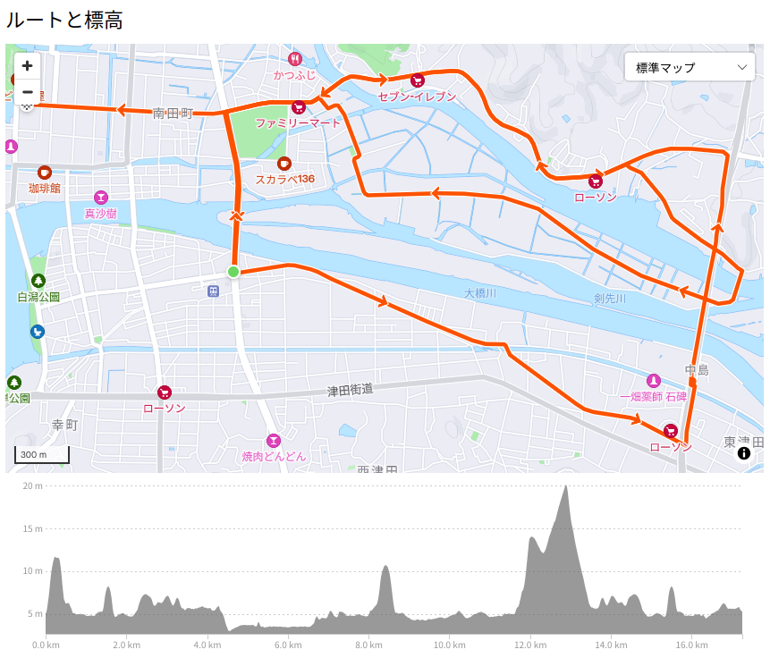

松江市内遊覧 — Long Steady Distance

今年は土日も含めた夏季休暇を6日ほど貰えた。 ちょっと思うところがあり，夏休みは自転車でたくさん距離を走ろうと思い立つ。 といってもがむしゃらに走るのではなく，あくまで LSD (Long Slow/Steady Distance) の範囲内で。
最終的に10日〜15日までの間に合計180kmちょっとの距離を走ることができた。 多少腿がはってる感じはあるが大きな筋肉痛もなく，上手くいったかな。 新しいサイクリング・ルートを開拓できたし。
せっかくなので，復習がてらもう一度通ってみるか。 というわけで，週末の今日も走りまくることにした。 明日の仕事にダメージが残らない程度にね。
松江市内遊覧
実は縁結び大橋からの眺めで，川の中州（？）が一面田んぼになってるのが見えたのね。
ここを走ったら絶対気持ちいいに決まってる！ というわけで，早速 Strava でルートを作成してみた。

松江市内遊覧より
JR松江駅付近を起点として松江市北公園経由で東進し，手貝大橋を渡って中州（？）に入り西進。 一旦JR松江駅付近まで戻って今度は縁結び大橋を北上し，最後に松江城に至るルート。
早速行ってみよう。
手貝大橋には大きな水門があった。
手貝大橋って朝酌川と大橋川（厳密には剣先川）との合流部分にあるのね。 あとで調べてみると，これは大橋川を逆流する中海の海水を堰き止めるための水門らしい。 中州の田んぼの水をどうやって確保してるのかと思ったが，そういうことなのかな？
さて，田んぼの真ん中の一本道を走ってみようか。
いやぁ，めがっさ気持ちいいっス。 ほぼ平坦な道なので脚への負担も少ないし。 これは週末サイクリングの定番コースにするしかないな。
あっ，松江城の写真撮るの忘れた。 まぁいいか。
意宇平野遊覧
昼食後は八雲温泉へ。 真っ直ぐ行くのもつまらないので意宇平野をぐるっと巡るルートにしてみた。 こんな感じ。
{kind=link}
途中，日吉の切通しで小休憩。
夏に水のある景色は心が和む。
熊野大社に着いたのだが，なんかお祭りやってる？
Web ページには何も書かれてなかったのだが，熊野大社の祭りじゃなくて地域のイベントなのだろうか？
ひととおり見物したあと八雲温泉へ。
今日もいいお湯でした。 ほんじゃあ帰るか。
今日1日で合計60kmほど。 この距離をもっと楽々乗れるようにならないとな。
参考

- GARMIN(ガーミン)Edge Explore 2 Power サイクルコンピューター【日本正規品】
- ガーミン(GARMIN) (Release 2022-09-22)
- スポーツ用品
- B0BD7FGVR6 (ASIN), 0753759310660 (EAN), 753759310660 (UPC)
- 評価
Garmin 製のルート探索・ナビゲーション特化のサイコン。タッチパネル助かる。充電ポートは USB-C (not PD)。また別売りの変換ケーブルを使いモバイルバッテリからパワーマウント経由で給電することもできる。ライドタイプが「ロード」「屋内」「グラベル」の3種類しかない。 Live Segment 非対応。

- Canon コンパクトデジタルカメラ PowerShot ZOOM 写真と動画が撮れる望遠鏡 PSZOOM
- キヤノン (Release 2020-12-10)
- エレクトロニクス
- B08L4WKDZ7 (ASIN), 4549292179675 (EAN)
- 評価
望遠鏡型コンパクトデジカメ。メモリと充電器（要 Power Delivery）は別に用意する必要がある。使い勝手はまぁまぁ。

- Let’s go ahead （『風都探偵』挿入歌）
- Machico (メインアーティスト)
- avex trax 2022-08-22 (Release 2022-08-22)
- MP3 ダウンロード
- B0B8D1S61W (ASIN)
- 評価
アニメ版仮面ライダーW「風都探偵」の劇中歌。mora で高解像度版が買える。いかにもアニソンぽい曲で大変よろしい！

- マイクロレボリューション
- TrySail (メインアーティスト)
- Sony Music Labels Inc. 2024-08-07 (Release 2024-08-07)
- MP3 ダウンロード
- B0DB5N3HJL (ASIN)
- 評価
双見酔さん原作のアニメ「ダンジョンの中の人」のOP曲。ノリのいい曲。mora で高解像度版が買える。双見酔さんの作品はよい。

- 粛聖!! ロリ神レクイエム☆
- しぐれうい (メインアーティスト)
- umbrella record 2022-05-25 (Release 2022-05-25)
- MP3 ダウンロード
- B09ZQ7RKHJ (ASIN)
- 評価
VTuber しぐれういのアルバム「まだ雨はやまない」に収録されているアレな曲で妙に耳に残る（褒め言葉）。 MV が1億再生を突破したらしい。 mora で高解像度版が買える。「泥水で口を洗え」の部分が好き（笑）

- うい麦畑でつかまえて
- しぐれうい (メインアーティスト)
- Universal Music LLC 2036-01-01 (Release 2024-06-24)
- MP3 ダウンロード
- B0D799F26C (ASIN)
- 評価
mora で高解像度版が買える。タイトルの元ネタ（？）の “The Catcher in the Rye” とは1ミリも関係ないよね，知らんけど（笑） MV もよい。